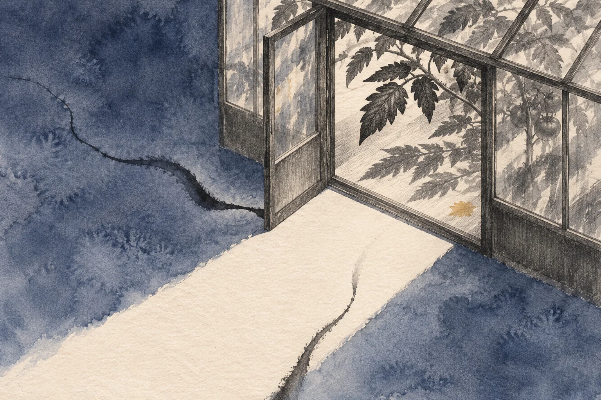

Den tomma kartan
Elin har lovat att märka ut vilka tomatplantor som behöver vatten. Före gryningen måste hon bestämma sig för vad två mikrofoner egentligen har sagt henne.
Explorations / Noveller
Illustrerade noveller från vetenskapens utmarker. Varje historia står för sig. Efter sista scenen finns spåren tillbaka till forskningen.
Linjerna visar delade teman. Välj ett tema i kartan för att filtrera novellerna.

Elin har lovat att märka ut vilka tomatplantor som behöver vatten. Före gryningen måste hon bestämma sig för vad två mikrofoner egentligen har sagt henne.